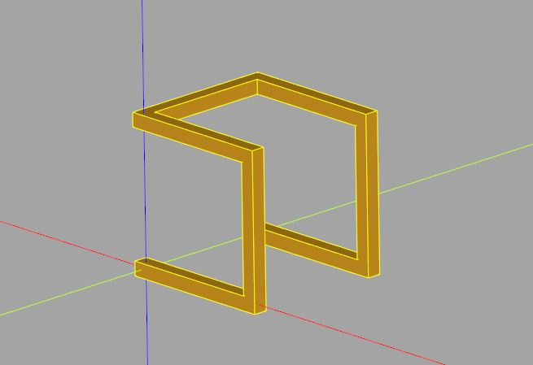

3D 海龜繪圖
November 27, 2021Python 標準程式庫內建 turtle 模組，在〈NumPy 與海龜繪圖（一）〉談過怎麼使用，而在〈NumPy 與海龜繪圖（二）〉中，也談過怎麼自己寫個 Turtle 類別，實現 2D 海龜繪圖。
實作 Turtle
如果想要進行 3D 海龜繪圖呢？最主要的是，必須記錄海龜自身觀點的三個軸，當你繞某個軸轉動時，代表另兩個軸的向量就是繞該軸旋轉的意思，在〈實作轉換矩陣〉中，既然已經實作過（使用四元數）繞軸特定軸旋轉的轉換，那就拿來用：
import numpy
from math import cos, sin, radians
from cadquery import Vector
def _rotation(direction, angle):
dir = direction if isinstance(direction, Vector) else Vector(*direction)
axis = dir.normalized()
half_a = radians(angle / 2)
s = sin(half_a)
x = s * axis.x
y = s * axis.y
z = s * axis.z
w = cos(half_a)
x2 = x + x
y2 = y + y
z2 = z + z
xx = x * x2
yx = y * x2
yy = y * y2
zx = z * x2
zy = z * y2
zz = z * z2
wx = w * x2
wy = w * y2
wz = w * z2
return numpy.array([
[1 - yy - zz, yx - wz, zx + wy, 0],
[yx + wz, 1 - xx - zz, zy - wx, 0],
[zx - wy, zy + wx, 1 - xx - yy, 0],
[0, 0, 0, 1]
])
class Turtle:
def __init__(self, x = 0, y = 0, z = 0):
self.coordinateVt = numpy.array([x, y, z, 0])
self.xAxis = numpy.array([1, 0, 0, 1])
self.yAxis = numpy.array([0, 1, 0, 1])
self.zAxis = numpy.array([0, 0, 1, 1])
def forward(self, leng):
self.coordinateVt = self.coordinateVt + self.xAxis * leng
return self
def roll(self, angle):
xr = _rotation(self.xAxis.tolist()[0:3], angle)
self.yAxis = xr @ self.yAxis
self.zAxis = xr @ self.zAxis
return self
def pitch(self, angle):
yr = _rotation(self.yAxis.tolist()[0:3], -angle)
self.xAxis = yr @ self.xAxis
self.zAxis = yr @ self.zAxis
return self
def turn(self, angle):
zr = _rotation(self.zAxis.tolist()[0:3], angle)
self.xAxis = zr @ self.xAxis
self.yAxis = zr @ self.yAxis
return self
def pos(self):
return self.coordinateVt.tolist()[0:3]
海龜繪圖
為了避免操作時，誤以為是繞世界座標的軸轉動，這邊以海龜的觀點，取了 roll、pitch 與 turn，也就是海龜會翻轉、抬頭與左右轉，先來個簡單的繪圖：
from cadquery import Workplane
...結合方才的程式碼
leng = 200
a = 170
n = 37
turtle = Turtle()
footprints = []
for _ in range(n):
footprints.append(turtle.pos())
turtle.forward(leng).turn(a)
r = Workplane().polyline(footprints)
如此一來，就會看到以下的圖案：
當然，這個圖案是在 XY 平面上，只是為了與〈NumPy 與海龜繪圖（二）〉的成果作個對照罷了，來畫個立體的：
import numpy
from math import cos, sin, radians
from scipy.spatial import ConvexHull
from cadquery import Vector, Edge, Wire, Solid, Shell, Face, Workplane
def _rotation(direction, angle):
dir = direction if isinstance(direction, Vector) else Vector(*direction)
axis = dir.normalized()
half_a = radians(angle / 2)
s = sin(half_a)
x = s * axis.x
y = s * axis.y
z = s * axis.z
w = cos(half_a)
x2 = x + x
y2 = y + y
z2 = z + z
xx = x * x2
yx = y * x2
yy = y * y2
zx = z * x2
zy = z * y2
zz = z * z2
wx = w * x2
wy = w * y2
wz = w * z2
return numpy.array([
[1 - yy - zz, yx - wz, zx + wy, 0],
[yx + wz, 1 - xx - zz, zy - wx, 0],
[zx - wy, zy + wx, 1 - xx - yy, 0],
[0, 0, 0, 1]
])
class Turtle:
def __init__(self, x = 0, y = 0, z = 0):
self.coordinateVt = numpy.array([x, y, z, 0])
self.xAxis = numpy.array([1, 0, 0, 1])
self.yAxis = numpy.array([0, 1, 0, 1])
self.zAxis = numpy.array([0, 0, 1, 1])
def forward(self, leng):
self.coordinateVt = self.coordinateVt + self.xAxis * leng
return self
def roll(self, angle):
xr = _rotation(self.xAxis.tolist()[0:3], angle)
self.yAxis = xr @ self.yAxis
self.zAxis = xr @ self.zAxis
return self
def pitch(self, angle):
yr = _rotation(self.yAxis.tolist()[0:3], -angle)
self.xAxis = yr @ self.xAxis
self.zAxis = yr @ self.zAxis
return self
def turn(self, angle):
zr = _rotation(self.zAxis.tolist()[0:3], angle)
self.xAxis = zr @ self.xAxis
self.yAxis = zr @ self.yAxis
return self
def pos(self):
return self.coordinateVt.tolist()[0:3]
# 〈實作 polyhedron〉的 polyhedron 函式
def polyhedron(points, faces):
def _edges(vectors, face_indices):
leng_vertices = len(face_indices)
return (
Edge.makeLine(
vectors[face_indices[i]],
vectors[face_indices[(i + 1) % leng_vertices]]
)
for i in range(leng_vertices)
)
vectors = [Vector(*p) for p in points]
return Solid.makeSolid(
Shell.makeShell(
Face.makeFromWires(
Wire.assembleEdges(
_edges(vectors, face_indices)
)
)
for face_indices in faces
)
)
# 將 Workplane 中的 Solid 頂點轉為 (x, y, z)
def toPoints(workplane):
return [(v.X, v.Y, v.Z) for v in workplane.vertices().vals()]
# 建立 3D 版本的凸包
def hull3D(points):
hull = ConvexHull(points)
# 凸包上的頂點
vertices = [points[i] for i in hull.vertices]
# 用來查詢頂點的索引值
v_i_lookup = {v: i for i, v in enumerate(vertices)}
# 建立面索引
faces = [
[v_i_lookup[points[i]] for i in face]
for face in hull.simplices
]
return polyhedron(vertices, faces)
def polylineJoin3D(points, join):
# 在每個點放上一個 join
joins = [join.translate(p) for p in points]
# 建立點與點間的凸包
lines = [
hull3D(toPoints(joins[i]) + toPoints(joins[i + 1]))
for i in range(len(joins) - 1)
]
# 將全部的凸包交集
polyline = Workplane(lines[0])
for i in range(1, len(lines)):
polyline = polyline.union(Workplane(lines[i]))
return polyline
# 海龜
turtle = Turtle()
footprints = [turtle.pos()]
footprints.append(turtle.forward(10).pos())
footprints.append(turtle.pitch(90).forward(10).pos())
footprints.append(turtle.pitch(90).forward(10).pos())
footprints.append(turtle.turn(90).forward(10).pos())
footprints.append(turtle.turn(90).forward(10).pos())
footprints.append(turtle.pitch(90).forward(10).pos())
footprints.append(turtle.pitch(90).forward(10).pos())
polyline = polylineJoin3D(footprints, Workplane().box(1, 1, 1))
這邊使用了〈hull 折線〉的成果，為了便於檢視完整程式，將全部的程式碼都列出來了，結果如下所示：
